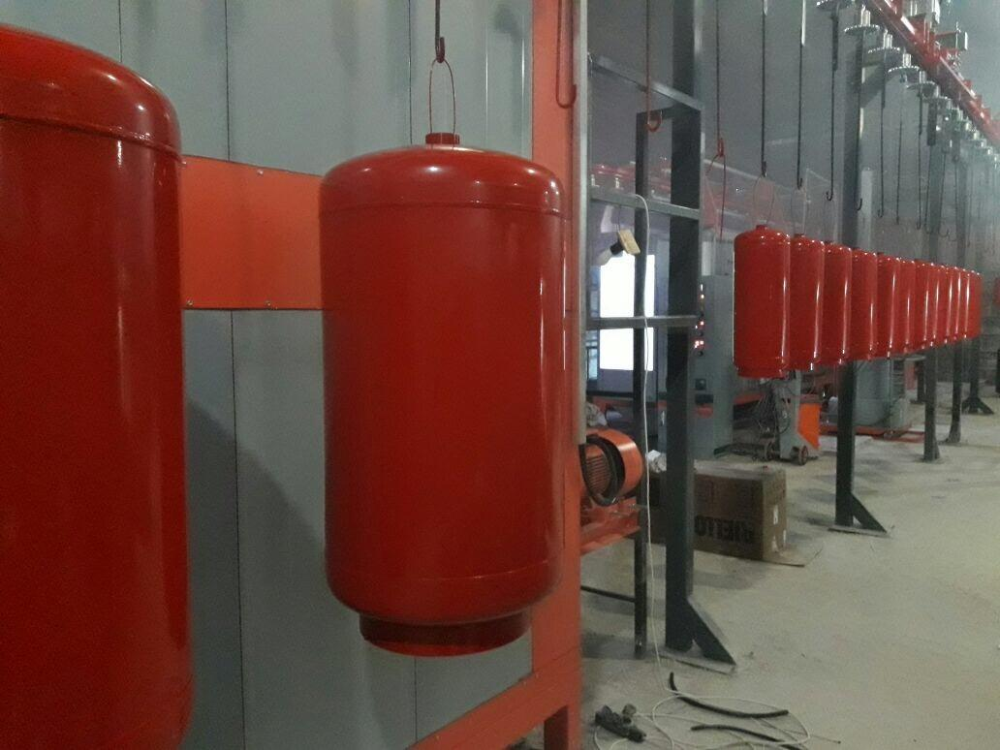

How to Verify a Fire Extinguisher Supplier in China (7 Red Flags to Avoid)
Most fire extinguisher exporters in China are honest, well-run businesses. The problem is that the few who are not can cost you a container of money, six months of sales pipeline, and a damaged reputation in your home market. This guide shows you the seven warning signs that should make you walk away, and the seven checks that confirm a supplier is worth a 20-foot container.

The Seven Red Flags
Most importers realise a supplier was the wrong choice only after the container has cleared. The signals were almost always visible earlier — if anyone was looking for them. Here are the seven flags experienced GCC importers screen for up front.
1. No verifiable business license or export registration
Every legitimate Chinese exporter holds a business license (ye.) registered with the local Administration for Market Regulation, plus a Customs Export Registration (jinchukou shoufa huo ren beian). Both are publicly searchable. A supplier who refuses to share the license number, or whose number does not appear in the official registry, is not who they claim to be.
2. No fixed workshop or production facility
For fire extinguishers, this matters more than for most products. A real supplier must have a workshop with hydrostatic testing rigs, drying ovens for agent refill, and space to load containers. A photo from a trade-show booth, a generic Alibaba storefront, or a small rented warehouse is not evidence of a real workshop.
3. Refusal of third-party inspection
Reputable exporters accept SGS, BV or TUV pre-shipment inspection at the buyer's cost. If a supplier refuses, restricts which inspectors you may use, or says the inspection must be done by their own "QA team," treat it as a deal-breaker. The only independent check of the product is the independent inspection.
4. Unusual payment terms
- 100% upfront by T/T with no commitment on shipping date.
- Western Union, MoneyGram or cryptocurrency — never legitimate for B2B trade.
- Account in a third country (Hong Kong, Singapore, Dubai) without explanation.
- Demands for cash deposits to "reserve production slots."
Standard structure is 30% T/T deposit and 70% against copy of B/L, or full payment via Trade Assurance / letter of credit.
5. Quote far below market
If a 6 kg ABC dry powder extinguisher is offered at USD 4 FOB when the market sits at USD 10–14, one of three things is happening: the unit is not new, the pressure test is fake, or the agent weight is short. A price that seems too good almost always is.
6. No references in your target market
A supplier claiming ten years of GCC experience should produce references in the UAE, Saudi Arabia, Qatar or Kuwait. Ask for two references you can contact on WhatsApp, ideally with the importer's name and city. If the references all turn out to be in markets you never asked about, the story is fictional.
7. Boilerplate communication and one-SKU catalogue
If the salesperson cannot tell you the cylinder steel grade, the valve supplier, the powder specification, or the country of origin of the valve, they are not speaking from real experience. A catalogue of only 2 or 3 SKUs is a sign of a trading company re-selling someone else's stock with no quality control.
The Seven Due-Diligence Checks
For every new supplier, run these seven checks before committing to a full container. The total cost is usually less than USD 500 and saves the average first-time importer from a six-figure mistake.
- Verify the business license. Search the National Enterprise Credit Information Publicity System (guojia qiyi xinxin gongshi xitong) for the license. Confirm legal name, registered capital, scope of business, and operating status. Be wary of newly registered companies with large export claims.
- Verify customs export registration. Genuine Chinese exporters are listed in the Customs registration database and have a 10-digit customs code (hai guan deng ji hao). Ask for it and confirm.
- Request recent bills of lading. Ask the supplier for BL numbers from three to five recent GCC-bound shipments, with consignee details redacted. Cross-check the format against actual BLs from the shipping line they claim to use.
- Order samples. 5 to 20 units shipped by air freight, USD 300 to USD 600 including air freight, lets you check powder quality, paint finish, valve function, pressure gauge accuracy, and Arabic/English labelling quality.
- Run a third-party inspection. Book an SGS, BV or TUV inspection at the supplier's workshop before shipment. Pay the inspection fee yourself. Make the inspection report a condition of final payment.
- Use Alibaba Trade Assurance or an L/C. Trade Assurance holds the payment in escrow until you confirm delivery. An irrevocable L/C through your bank is even safer. Both are accepted by established Chinese exporters; refusal is a red flag in itself.
- Visit or live-video the workshop. If you cannot travel, ask for a live WeChat or WhatsApp video walk-through of the workshop, hydrostatic test rig, and finished goods warehouse. A real exporter will agree in five minutes.
💡 Pro tip: Document everything in writing, even WeChat conversations. When a dispute arises, your strongest asset is the message thread showing what the supplier actually promised, not what their sales rep remembers.
A 10-Minute Pre-Payment Checklist
If you have a meeting with a new supplier tomorrow, run through this before you wire the deposit:
- License checked and operating status is normal.
- Customs code verified.
- At least two references in your target country reachable by WhatsApp.
- Sample ordered and inspected — or a sample inspection report from a credible third party.
- Inspection body booked for the production order.
- Payment structure is 30/70 or Trade Assurance — not 100% upfront.
- Quotation matches market range ±10%.
- Lead time and shipment method agreed in writing.
- Arabic and English labelling confirmed in writing.
- You have a real email, mobile and physical address, not just an Alibaba inbox.
Frequently Asked Questions
How do I check if a Chinese fire extinguisher supplier is a real exporter?
Ask for their Chinese business license and Customs Export Registration, both of which can be verified publicly. The business license is searchable on the National Enterprise Credit Information Publicity System, and customs registration is searchable on the China Customs portal. A genuine exporter will have no problem providing both.
What is the safest payment method for a first order from a Chinese supplier?
For a first order, the safest routes are Alibaba Trade Assurance (escrow, you pay only after delivery confirmation) or an irrevocable letter of credit through your bank. The classic structure is 30% T/T deposit with the balance paid against a copy of the bill of lading once the vessel sails. Avoid 100% upfront payments, Western Union, or cryptocurrency.
Should I order samples before placing a container order?
Yes, for any supplier you have not worked with before. Sample orders of 5 to 20 units cost a few hundred dollars and let you check powder quality, valve function, paint finish, hydrostatic test stamping, and labeling before committing to a full container. Many importers who skip samples end up with containers of mislabelled product.
Is a supplier who refuses third-party inspection safe to deal with?
Treat refusal as a serious red flag. Reputable Chinese exporters accept SGS, BV or TUV pre-shipment inspections on the buyer's cost. If a supplier refuses or limits which inspectors you may use, walk away. The inspection is your only objective check that what you ordered is what gets loaded.
How can I verify the supplier has actually shipped to my country?
Ask for redacted bills of lading from recent GCC-bound shipments, with the consignee name blanked. Cross-check the BL number format against the line used on the major Shanghai / Ningbo / Shenzhen services. A supplier who claims ten years of exporting should produce a dozen or so recent BLs without difficulty.
Why FireGuard Trading Passes These Checks
FireGuard Trading has been exporting refurbished and new fire extinguishers from China to the Middle East for years. We hold a registered business license, customs export registration, a workshop with hydrostatic test equipment, and finished stock for fast shipment. We accept Trade Assurance, L/C, and the standard 30/70 T/T structure with the balance paid against B/L copy. References in the UAE, Saudi Arabia, Qatar and Oman are available on request.
If you are evaluating a new supplier, use the checklist in this article — and if you would like to compare us against your current option, send us the same RFQ and we will quote side by side.